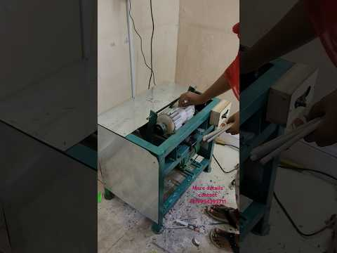
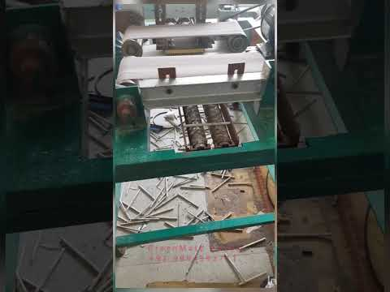

Paper Pencil & Pen Making Machines from Sivakasi
Custom-engineered by actual paper pencil manufacturers. Built with rugged industrial drives, low energy consumption, and high hourly output for sustainable business units.
Industrial Machinery Specifications & Video Demos
Watch real workshop operations and check technical parameters. Built for single-phase domestic supply or factory grids.
 Paper Pencil Rolling Machine
Paper Pencil Rolling Machine
Paper Pencil Rolling Machine
Engineered for tight, bubble-free rolling of upcycled newsprint or kraft paper around graphite cores. Variable speed control ensures precision bonding without core slippage.

Dual End Cutting MachineDual End Cutting Machine
Simultaneously trims both pencil ends to millimeter perfection. Delivers identical pencil lengths, clean right-angle cuts, and leaves barrels prepared for seamless polishing.

Pencil Polishing MachinePencil Polishing Machine
High-efficiency surface sanding and finishing unit. Produces smooth cylindrical barrels with uniform diameters, removing paper seam lines prior to painting or stamping.
 Paper Pen Making Machine
Paper Pen Making Machine
Paper Pen Making Machine
High-yield automatic paper pen rolling machine. Consumes low electricity while delivering continuous output with low-maintenance industrial parts and smooth cap fitment.
Every Machine Can Be Custom Built
Fabricated in-house with registered motor specs tailored to your factory requirements.
Custom Speed Ratios
Configure gear drives to match your output volume and operator experience.
Single or 3-Phase Electric
Built for standard 220V domestic supply or 415V three-phase industrial lines.
Semi vs Full Automation
Start with cost-effective manual feeds or upgrade to hopper-fed automation.
Printing & Stamping Units
Integrated hot-foil or pad printing attachments for branding logos on pencils.
International Power Rules
Motors, pulleys, and wiring compliant with African, Asian, and European standards.
Why Choose GreenMate Machinery?
Because we run paper pencil production lines daily ourselves, our machine designs are refined from practical factory operations—not theoretical drawings.
We supply everything in a single consolidated consignment: heavy-duty machines, food-grade adhesive formulas, paper reels, and premium 2B graphite leads.
Exported Across 8+ Nations
- Uganda
- Egypt
- Kenya
- Mauritius
- Sri Lanka
- Bangladesh
- Nepal
- Bhutan
- Pan-India Supply
- Full Spare Support
Start Your Production Unit
From initial machinery selection to doorstep factory commissioning.
-
Requirement Consultation
Tell us your target daily production, electricity type, and floor area.
-
Tailored Machine Proposal
We provide exact machinery configuration, power needs, and FOB/CIF pricing.
-
Precision Fabrication
Machines are machined, welded, wired, and factory-tested in Sivakasi.
-
Global Dispatch
Secure wooden crate packing with manuals, spare blades, and optional raw materials.